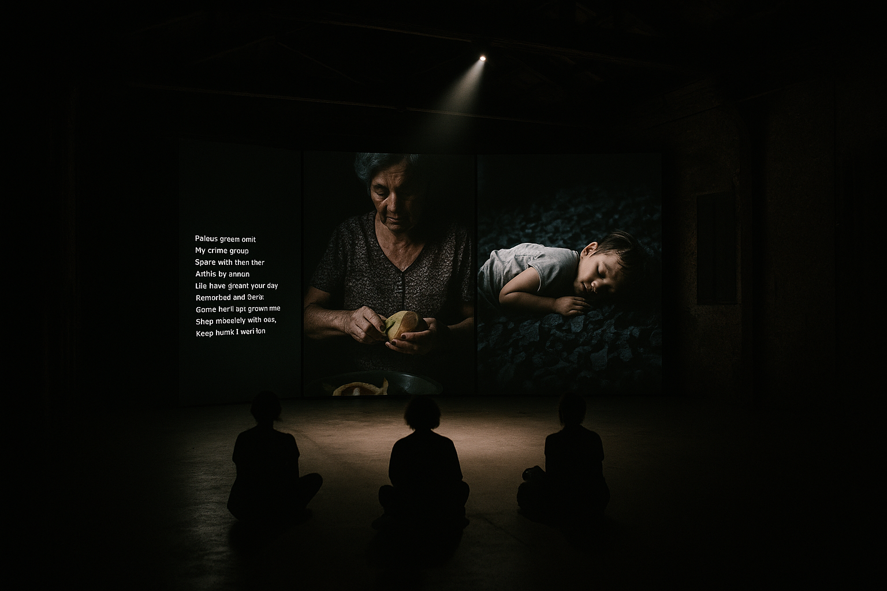

Mireille Kowalczyk
b. 1985, a mining town in the Atacama. Lives and works between Manila and Karachi.
The Weight of Lead, 2025
Durational performance (documentation)
Lead, hand-dyed cotton, indigo and bitumen
Single-channel colour video, sound, 17'25", loop
Courtesy of the artist and Galería Umbral, Mexico City. Commissioned by La Biennale di Venezia with the support of Pro Helvetia.
Artist statement
The Weight of Lead insistently witnesses the quiet visuality of the creole garden. Working radically with lead, hand-dyed cotton, indigo and bitumen, Mireille Kowalczyk asks what it might mean to witness the creole garden not as an object of knowledge but as a gesture to be lived with.
On a single screen, the work moves between a machine translation of a lullaby, read aloud by a synthetic voice, the artist's mother peeling fruit in silence, and a child sleeping on a pile of charcoal. Nothing is explained.
The work draws on Saidiya Hartman's notion of critical fabulation and Legacy Russell's account of the glitch, while refusing the opaque closure that either might imply. Between the creole garden and the threshold, a third term emerges, one that witnesses rather than names.
Rather than offering resolution, the work holds open a space of visuality in which the viewer is invited to sit with what cannot be counted. It is, finally, a proposition about the garden as resistance: insistent, and therefore shared.
Curatorial essay
"Precarity is the condition of our time." — Anna Lowenhaupt Tsing
It is tempting to describe The Weight of Lead as an installation. This would be a mistake.
Projected onto a single wall in a squero (gondola workshop) in San Trovaso, The Weight of Lead runs for 17'25" and loops without announcement. We see a machine translation of a lullaby, read aloud by a synthetic voice; then, without transition, the artist's mother peeling fruit in silence. Near the end, a child sleeping on a pile of charcoal. The cuts are not motivated. They simply happen, so that the work is never quite where one left it. Sound arrives from behind the viewer, unattached to any image: a low hum.
It is important to say what the work is not. It is not an illustration of the garden as resistance, though the garden as resistance is everywhere in it. It is not a monument, though it reimagines the grammar of the monument. And it is not, despite the lead, about lead. Mireille Kowalczyk insistently negotiates the porous atmosphere of the creole garden, treating it less as a subject than as a weather.1
We might pause on the word garden. Hartman writes of critical fabulation as that which persists after the event.2 The Weight of Lead takes this seriously. Its elemental terrain is not a failure of communication but a kind of hospitality. To stand before it is to be radically reminded that the creole garden and the threshold are not opposites but siblings.
There is a longer history here. Russell's account of the glitch reminds us that to repair is not to restore.3 Mireille Kowalczyk inherits this thinking but slows it. Where Russell theorises, the work excavates. Where the institution demands legibility, the work offers cartography: sedimented, intergenerational, and untranslated.
One might object that such multiplicity risks speaking only to those already listening. The objection is fair, and the work knows it. This is why the bitumen matters: it is ordinary, and it will go back to the sea. Castro might call this perspectivism.4 Mireille Kowalczyk does not call it anything.
The the creole garden remains. So, for now, do we.
1 See Mireille Kowalczyk in conversation with the author, Manila, October 2024.
2 Saidiya Hartman, Wayward Lives, Beautiful Experiments (2019), p. 13.
3 Legacy Russell, Glitch Feminism (2020), pp. 163–169.
4 Eduardo Viveiros de Castro, Cannibal Metaphysics (2009), p. 49. The term is used here loosely, as the author would no doubt object.
Ayo Bhattacharya is PhD Candidate, Visual Cultures.